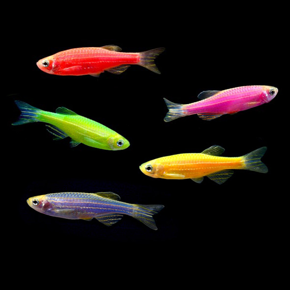
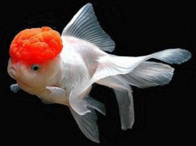
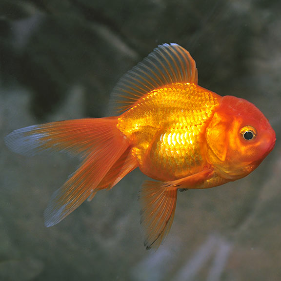

Zebra Danio
Danio Rerio
The zebrafish (Danio rerio) is a freshwater fish belonging to the minnow family (Cyprinidae) of the order Cypriniformes. Native to South Asia,
it is a popular aquarium fish, frequently sold under the trade name zebra danio (and thus often called a "tropical fish" although both tropical and
subtropical). The zebrafish is also an important and widely used vertebrate model organism in scientific research, for example in drug development,
in particular pre-clinical development. It is also notable for its regenerative abilities, and has been modified by researchers to produce many
transgenic strains.

Glo Fish
GloFish fluorescent fish are born brilliant! They are not injected or dyed. They inherit their harmless, lifelong color from their parents, and
require the same care as any other community fish. GloFish are great for any home, office, or classroom and perfect for hobbyists and beginners alike.
GloFish are similar to other fish, except they have a much brighter disposition. GloFish are available in six stunning colors: Starfire Red,
Electric Green, Sunburst Orange, Cosmic Blue, and Galactic Purple.

Bristlenose Pleco
Ancistrus
Ancistrus is a genus of nocturnal freshwater fish in the family Loricariidae of order Siluriformes, native to freshwater habitats in South America
and Panama. Fish of this genus are common in the aquarium trade where known as bushynose or bristlenose catfish. Sometimes, they are called bushynose
or bristlenose plecos instead, but this may lead to confusion as "pleco" usually is used for Hypostomus plecostomus and a few of its close relatives
but is also classed and or sold as a pleco by most places.

Oranda
Carassius auratus
An oranda is a breed of goldfish characterized by a prominent bubble-like "hood" on the head. The headgrowth or hood (also known as wen or crown)
may be a prominent growth on the top of the head (cranial region) or may encase the entire face except for the eyes and mouth.When it was first
imported from China to Japan it was mistakenly thought to be native to the Netherlands, and was therefore dubbed the "Holland Lionmask",
Dutch Lionhead, and "Netherlands Lion Head", from which its English name "oranda" derives.

Gold Fish
Carassius auratus
The goldfish (Carassius auratus) is a freshwater fish in the family Cyprinidae of order Cypriniformes. It is one of the most commonly kept aquarium fish.
A relatively small member of the carp family (which also includes the Prussian carp and the crucian carp), the goldfish is native to East Asia. It
was first selectively bred in Ancient China more than a thousand years ago, and several distinct breeds have since been developed. Goldfish breeds vary
greatly in size, body shape, fin configuration and colouration (various combinations of white, yellow, orange, red, brown, and black are known).

Giant Danio
Devario aequipinnatus
The giant danio (Devario aequipinnatus) is a tropical fish belonging to the minnow family Cyprinidae. Originating in Sri Lanka, Nepal,
and the west coast of India, this species grows to a maximum length of 4 inches (10 cm), making it one of the largest of the danionins.
It is characterized by a blue and yellow, torpedo-shaped body with gray and clear fins. In the wild, giant danios live in clear streams
and rivers among hills at elevations up to 1000 ft (300 m) above sea level. Their native substrate is small gravel. They are native to a
tropical climate and prefer water with a 6-8 pH, a water hardness of 5.0-19.0 dGH, and a temperature range of 72-81 °F (22-27 °C). As
surface dwellers, their diets consist predominantly of exogenous insects, but is also supplemented by worms and crustaceans.